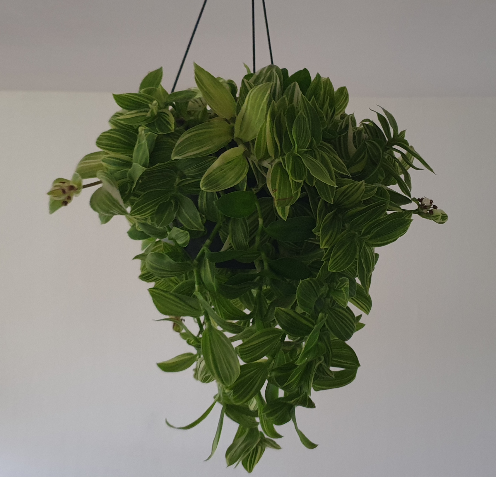
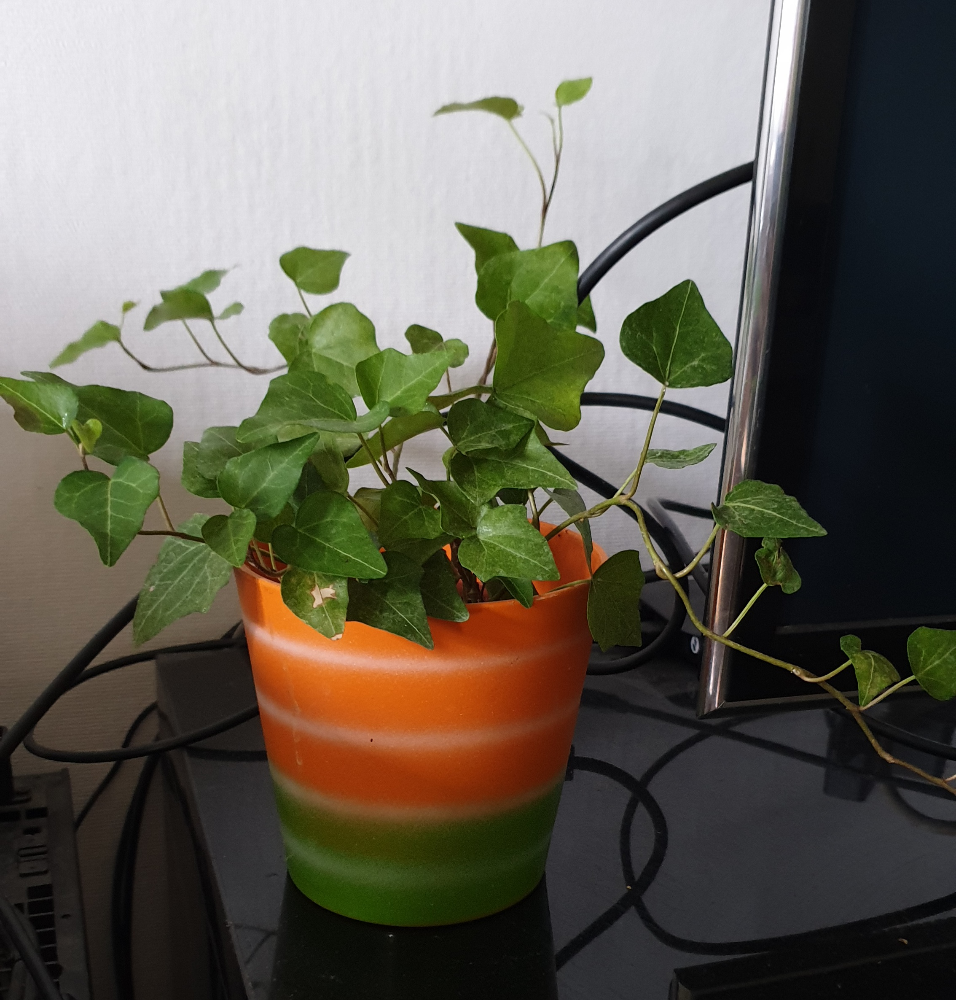
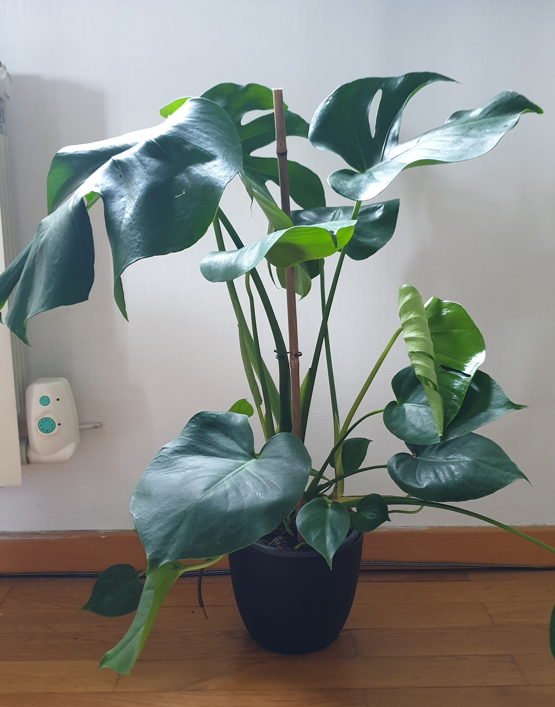
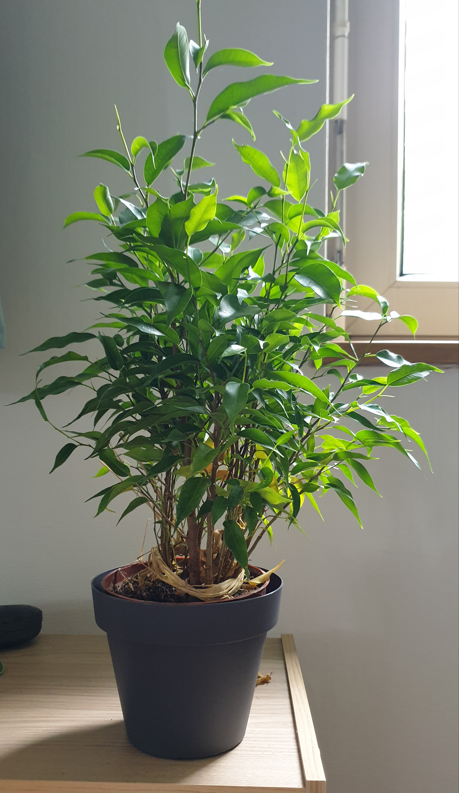
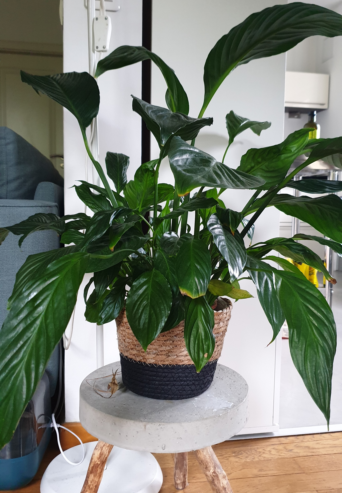
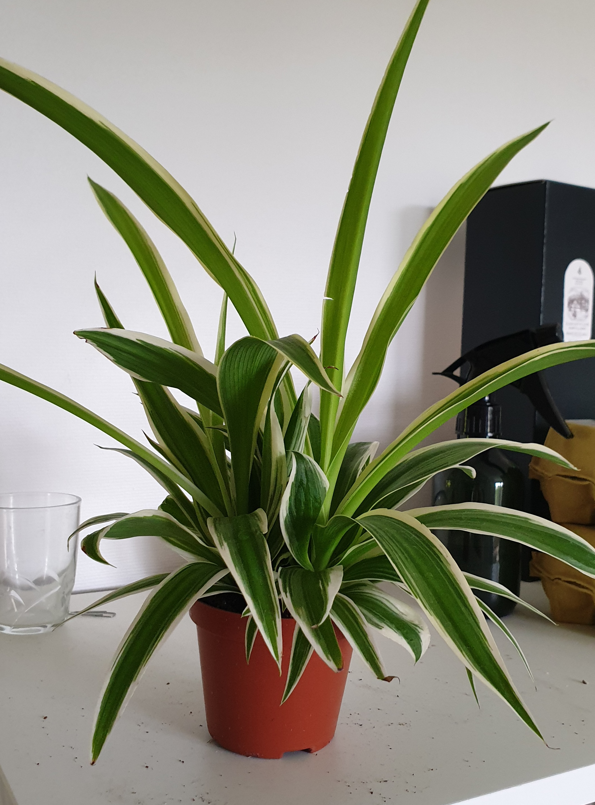
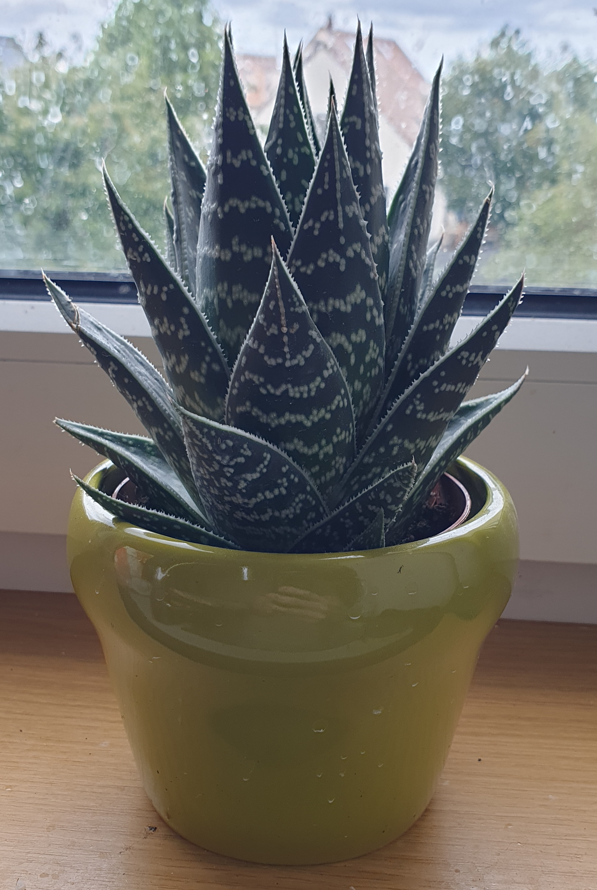
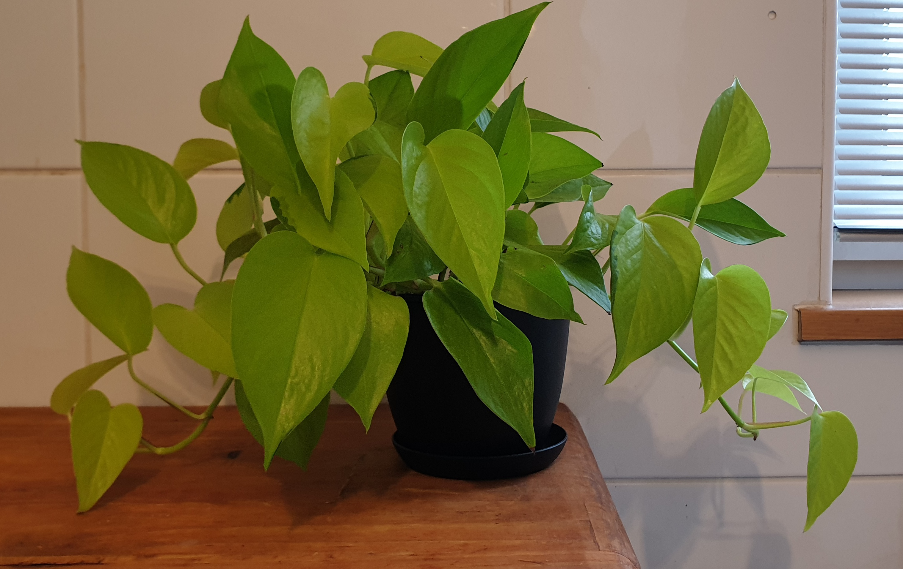
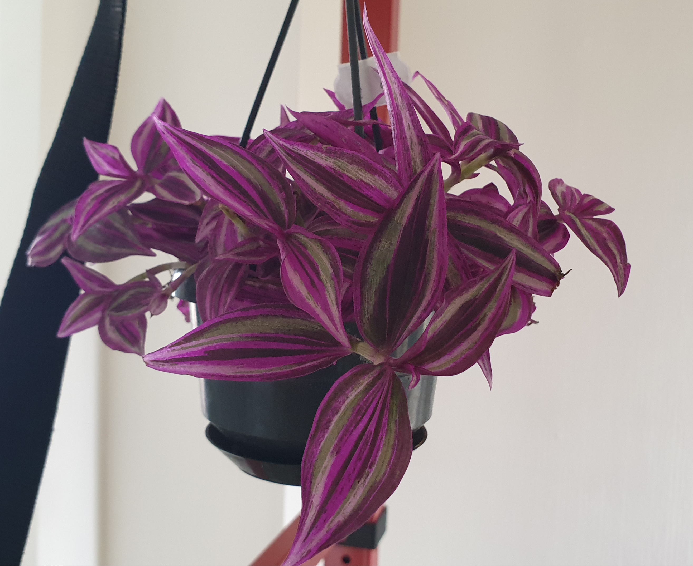

| Latin Name | Given Name | Photo | Wikipedia |
|---|---|---|---|
| Tradescantia fluminensis | Lizzie |  | Wikipedia |
| Hedera helix | Pierre |  | Wikipedia |
| Monstera deliciosa | Jean-Paul |  | Wikipedia |
| Ficus benjamina | Auguste |  | Wikipedia |
| Spathiphyllum wallisii | Wallid |  | Wikipedia |
| Chlorophytum comosum | Ysabell |  | Wikipedia |
| Aloe aristata | Alejandro |  | Wikipedia |
| Epipremnum aureum | Leonard |  | Wikipedia |
| Tradescantia zebrina | Leela |  | Wikipedia |